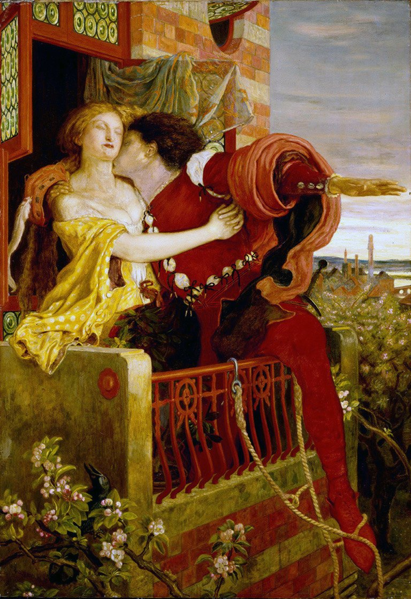

1
Hamlet: Ghosts, Revenge and the Tragic
William Shakespeare, Hamlet, about 1600. A ghost, a prince who hesitates and a play staged to trap a king. Five lessons.
Open Hamlet
Hamlet, Macbeth, Othello: three tragedies that William Shakespeare wrote within a few years of each other, around 1600. A young prince cannot decide whether to avenge his father, a brave soldier murders his king to seize the crown, and a respected general is destroyed by jealousy. Each play opens onto its own world, from a cold castle in Denmark to the misty moors of Scotland, and from the glittering streets of Venice to the island of Cyprus. These plays may puzzle you at first, with their old language, their violence and their characters torn by doubt, and that is exactly what Shakespeare intended, because he wanted his audience to feel unsettled.
Yet the same tools return from one tragedy to the next. There are characters who speak to each other, a conflict that grows, a stage and an audience that listens. Soliloquies and asides, stage directions, ghosts and prophecies, and the fatal turning point are the keys to Shakespeare, and they still shape the films and series you watch today.
The Canadian critic Northrop Frye compared the stories of the world and noticed that they follow a few great patterns, much like the seasons. For him, tragedy is the story of autumn, the moment when everything that has risen begins to fall.
The tragic hero first stands at the top of the wheel, above ordinary people but below the gods. Hamlet is a prince, Macbeth a victorious general and Othello a celebrated commander, and from such a height the only way left is down.
Then the hero breaks the order of the world. Macbeth kills a king, Othello kills his innocent wife, and Hamlet lets doubt and revenge poison a whole court. For Frye, the hero's fault is not simply a moral weakness: it comes from the position he holds and from the act that sets everything in motion.
Little by little, the hero is cut off from others. Hamlet trusts no one, Macbeth loses his wife and his friends, and Othello listens only to Iago. The higher the hero stands, the lonelier he becomes.
Once the order of the world has been broken, it rights itself, whatever the cost. The Greeks called this force nemesis, the power that brings everything back into place: the hero is destroyed, and the truth comes out.
At the very end, the hero often understands, but too late. Othello sees that Desdemona was innocent, and Macbeth realises that the witches' promises were traps.
When the curtain falls, someone else takes over, Fortinbras in Denmark, Malcolm in Scotland, Cassio in Cyprus. Life goes on, but the audience leaves shaken by pity and fear.
In these plays, words are weapons. Iago poisons his general's mind with a few well-chosen lies, the witches and Lady Macbeth push a hero towards murder, and Hamlet pretends to be mad and stages a play to trap a killer. Long before Shakespeare, the Greek philosopher Plato feared that the theatre could manipulate people, and the question has not aged, since images, adverts and social media also try to make us believe things. Shakespeare puts manipulation in the spotlight, so that we learn to recognise it.
At the heart of each tragedy lies a rule, whether loyalty to the king, duty to the family or the order of society. What happens when someone breaks it? Macbeth pays for his ambition, Hamlet for his hesitation and Othello for his blind trust, while Ophelia, Lady Macbeth and Desdemona are often crushed by the world of men around them. These questions are four hundred years old, and they are still ours.
Shakespeare is not meant to sleep in books. His plays are performed every season in London, at Shakespeare's Globe on the South Bank, rebuilt as it was in his day, and at the National Theatre, but also in Stratford-upon-Avon, his home town, by the Royal Shakespeare Company, and all over the world. It is an ancient art that remains modern, speaking directly to the audience and awakening minds.
In this sequence, you are going to read, speak and perform. You will discover how a tragedy works, act out key scenes and write your own lines. And perhaps, by the end, you will want to sit in a dark theatre and hear a voice ask: "To be, or not to be?"
Anglais · Première et Terminale · lycée général et technologique. Begin with Hamlet, go on with Macbeth and Othello, and finish with the film.
1
William Shakespeare, Hamlet, about 1600. A ghost, a prince who hesitates and a play staged to trap a king. Five lessons.
Open Hamlet2
William Shakespeare, Macbeth, about 1606. Witches, a murdered king and a couple destroyed by guilt. Six lessons.
Open Macbeth3
William Shakespeare, Othello, about 1603. Iago's lies and the trap of theatrical illusion. Anglais · Terminale · Spécialité LLCER. Ten lessons.
Open Passing the Flame4
Film study: John Madden, 1998. A young Will Shakespeare writes Romeo and Juliet while he lives his own love story. A viewing guide in three steps.
Open the film study© 2026 Madame Carole Paoli Pompougnac · CC BY-NC-SA 4.0